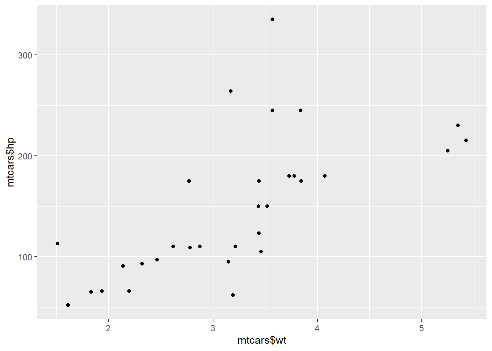

Module 2 Intermediate R
Intermediate R is the next stop on your journey in mastering the R programming language. In this R training, you will learn about conditional statements, loops, and functions to power your own R scripts. Next, make your R code more efficient and readable using the apply functions. Finally, the utilities chapter gets you up to speed with regular expressions in R, data structure manipulations, and times and dates. This course will allow you to take the next step in advancing your overall knowledge and capabilities while programming in R.
2.1 Conditionals and Control Flow
In this chapter, you’ll learn about relational operators for comparing R objects, and logical operators like “and” and “or” for combining TRUE and FALSE values. Then, you’ll use this knowledge to build conditional statements.
2.1.1 Video: Relational Operators
2.1.2 Equality
The most basic form of comparison is equality. Let’s briefly recap its syntax. The following statements all evaluate to TRUE (feel free to try them out in the console).
2.1.2.1 Playing around with equalities and inequalities
3 == (2 + 1)## [1] TRUE"intermediate" != "r"## [1] TRUETRUE != FALSE## [1] TRUE"Rchitect" != "rchitect"## [1] TRUENotice from the last expression that R is case sensitive: “R” is not equal to “r”. Keep this in mind when solving the exercises in this chapter!
2.1.2.2 Comparison of logicals
TRUE == FALSE## [1] FALSE2.1.2.3 Comparison of numerics
-6 * 14 != 17 - 101## [1] FALSE2.1.2.4 Comparison of character strings
"useR" == "user"## [1] FALSE2.1.2.5 Compare a logical with a numeric
TRUE == 1## [1] TRUEAwesome! Since TRUE coerces to 1 under the hood, TRUE == 1 evaluates to TRUE. Make sure not to mix up == (comparison) and = (using for settings in functions). == is what needed to check the equality of R objects.
2.1.3 Greater and less than
Apart from equality operators, Filip also introduced the less than and greater than operators: < and >. You can also add an equal sign to express less than or equal to or greater than or equal to, respectively. Have a look at the following R expressions, that all evaluate to FALSE:
(1 + 2) > 4
"dog" < "Cats"
TRUE <= FALSE
Remember that for string comparison, R determines the greater than relationship based on alphabetical order. Also, keep in mind that TRUE is treated as 1 for arithmetic, and FALSE is treated as 0. Therefore, FALSE < TRUE is TRUE.
2.1.3.1 Comparison of numerics
-6 * 5 + 2 >= -10 + 1## [1] FALSE2.1.3.2 Comparison of character strings
"raining" <= "raining dogs"## [1] TRUE2.1.3.3 Comparison of logicals
TRUE > FALSE## [1] TRUEMake sure to have a look at the console output to see if R returns the results you expected.
2.1.4 Compare vectors
You are already aware that R is very good with vectors. Without having to change anything about the syntax, R’s relational operators also work on vectors. But be careful: the comparison is element-by-element, so the tow vectors must have the same number of elements (i.e. they must be the same length).
Let’s go back to the example that was started in the video. You want to figure out whether your activity on social media platforms have paid off and decide to look at your results for LinkedIn and Facebook. The sample code in the editor initializes the vectors linkedin and facebook. Each of the vectors contains the number of profile views your LinkedIn and Facebook profiles had over the last seven days.
2.1.4.1 Create the vectors linked and facebook (used in the video)
linkedin <- c(16, 9, 13, 5, 2, 17, 14)
facebook <- c(17, 7, 5, 16, 8, 13, 14)2.1.4.2 Popular days
linkedin > 15## [1] TRUE FALSE FALSE FALSE FALSE TRUE FALSE2.1.4.3 Quiet days
linkedin <= 5## [1] FALSE FALSE FALSE TRUE TRUE FALSE FALSE2.1.4.4 LinkedIn more popular than Facebook
linkedin > facebook## [1] FALSE TRUE TRUE FALSE FALSE TRUE FALSEHave a look at the console output. Your LinkedIn profile was pretty popular on the sixth day, but less so on the fourth and fifth day.
2.1.5 Compare matrices
R’s ability to deal with different data structures for comparisons does not stop at vectors. Matrices and relational operators also work together seamlessly!
First we’ll store the LinkedIn and Facebook data in a matrix (rather than in vectors). We’ll call this matrix views. The first row contains the LinkedIn information; the second row the Facebook information. The original vectors facebook and linkedin are still available as well.
2.1.5.2 When does views equal 13?
views == 13## [,1] [,2] [,3] [,4] [,5] [,6] [,7]
## [1,] FALSE FALSE TRUE FALSE FALSE FALSE FALSE
## [2,] FALSE FALSE FALSE FALSE FALSE TRUE FALSE2.1.5.3 When is views less than or equal to 14?
views <= 14## [,1] [,2] [,3] [,4] [,5] [,6] [,7]
## [1,] FALSE TRUE TRUE TRUE TRUE FALSE TRUE
## [2,] FALSE TRUE TRUE FALSE TRUE TRUE TRUEThis exercise concludes the part on comparators. Now that you know how to query the relation between R objects, the next step will be to use the results to alter the behavior of your programs. Find out all about that in the next video!
2.1.6 Video: Logical Operators
2.1.7 & and |
Before you work your way through the next exercises, have a look at the following R expressions. All of them will evaluate to TRUE:
TRUE & TRUE
FALSE | TRUE
5 <= 5 & 2 < 3
3 < 4 | 7 < 6
Watch out: 3 < x < 7 to check if x is between 3 and 7 will not work; you’ll need 3 < x & x < 7 for that.
In this exercise, you’ll be working with the last variable. We’ll make this variable equal the last value of the linkedin vector that you’ve worked with previously. The linkedin vector represents the number of LinkedIn views your profile had in the last seven days, remember?
2.1.7.1 Defining the last variable
last <- tail(linkedin, 1)2.1.7.2 Is last under 5 or above 10?
last < 5 | last > 10## [1] TRUE2.1.7.3 Is last between 15 (exclusive) and 20 (inclusive)?
last > 15 & last <= 20## [1] FALSEHave one last look at the console before proceeding; do the results of the different expressions make sense?
2.1.8 & and | (2)
Like relational operators, logical operators work perfectly fine with vectors and matrices.
Ready for some advanced queries to gain more insights into your social outreach?
2.1.8.1 linkedin exceeds 10 but facebook below 10
linkedin > 10 & facebook < 10## [1] FALSE FALSE TRUE FALSE FALSE FALSE FALSE2.1.8.2 When were one or both visited at least 12 times?
linkedin >= 12 | facebook >= 12## [1] TRUE FALSE TRUE TRUE FALSE TRUE TRUE2.1.8.3 When is views between 11 (exclusive) and 14 (inclusive)?
views > 11 & views <= 14## [,1] [,2] [,3] [,4] [,5] [,6] [,7]
## [1,] FALSE FALSE TRUE FALSE FALSE FALSE TRUE
## [2,] FALSE FALSE FALSE FALSE FALSE TRUE TRUEYou’ll have noticed how easy it is to use logical operators to vectors and matrices. What do these results tell us? The third day of the recordings was the only day where your LinkedIn profile was visited more than 10 times, while your Facebook profile wasn’t. Can you draw similar conclusions for the other results?
2.1.9 Question: Reverse the result: !
2.1.10 Blend it all together
With the things you’ve learned by now, you’re able to solve pretty cool problems.
Instead of recording the number of views for your own LinkedIn profile, suppose you conducted a survey inside the company you’re working for. You’ve asked every employee with a LinkedIn profile how many visits their profile has had over the past seven days. The data will be stored in the matrix employees_views, then a data fram li_df created from this matrix, with appropriate names for the rows. Finally, names will be added to the columns.
2.1.10.1 Creating data frame li_df
employees_views <- matrix(c(2, 3, 3, 6, 4, 2, 0, 19, 23, 18, 22, 23, 29, 25, 24, 18, 15, 19, 18, 22, 17, 22, 18, 27, 26, 19, 21, 25, 25, 25, 26, 31, 24, 36, 37, 22, 20, 29, 26, 23, 22, 29, 0, 4, 2, 2, 3, 4, 2, 12, 3, 15, 7, 1, 15, 11, 19, 22, 22, 19, 25, 24, 23, 23, 12, 19, 25, 18, 22, 22, 29, 27, 23, 25, 29, 30, 17, 13, 13, 20, 17, 12, 22, 20, 7, 17, 9, 5, 11, 9, 9, 26, 27, 28, 36, 29, 31, 30, 7, 6, 4, 11, 5, 5, 15, 32, 35, 31, 35, 24, 25, 36, 7, 17, 9, 12, 13, 6, 12, 9, 6, 3, 12, 3, 8, 6, 0, 1, 11, 6, 0, 4, 11, 9, 12, 6, 13, 12, 13, 11, 6, 15, 15, 10, 9, 7, 18, 17, 17, 12, 4, 14, 17, 7, 1, 12, 8, 2, 4, 4, 11, 5, 8, 0, 1, 6, 3, 1, 2, 7, 5, 3, 1, 5, 5, 29, 25, 32, 28, 28, 27, 27, 17, 15, 17, 23, 23, 17, 22, 26, 32, 33, 30, 33, 28, 26, 27, 29, 24, 29, 26, 31, 28, 4, 1, 1, 2, 1, 7, 4, 22, 22, 17, 20, 14, 19, 13, 9, 11, 7, 10, 8, 15, 5, 6, 5, 12, 5, 17, 17, 4, 18, 17, 12, 22, 22, 13, 12, 2, 12, 13, 7, 10, 6, 2, 32, 26, 20, 23, 24, 25, 21, 5, 13, 12, 11, 6, 5, 10, 6, 10, 11, 6, 6, 2, 5, 30, 37, 32, 35, 37, 41, 42, 34, 33, 32, 35, 33, 27, 35, 15, 19, 21, 18, 22, 26, 22, 28, 29, 30, 19, 21, 19, 26, 6, 8, 6, 7, 17, 11, 14, 17, 22, 27, 24, 18, 28, 24, 6, 10, 17, 18, 13, 10, 7, 18, 19, 22, 17, 21, 15, 23, 21, 27, 28, 28, 26, 17, 25, 10, 18, 20, 18, 12, 19, 17, 6, 15, 15, 15, 10, 14, 2, 30, 28, 29, 31, 24, 20, 25), nrow = 50, byrow = TRUE)
li_df <- data.frame(employees_views, row.names = c("employee_1", "employee_2", "employee_3", "employee_4", "employee_5", "employee_6", "employee_7", "employee_8", "employee_9", "employee_10", "employee_11", "employee_12", "employee_13", "employee_14", "employee_15", "employee_16", "employee_17", "employee_18", "employee_19", "employee_20", "employee_21", "employee_22", "employee_23", "employee_24", "employee_25", "employee_26", "employee_27", "employee_28", "employee_29", "employee_30", "employee_31", "employee_32", "employee_33", "employee_34", "employee_35", "employee_36", "employee_37", "employee_38", "employee_39", "employee_40", "employee_41", "employee_42", "employee_43", "employee_44", "employee_45", "employee_46", "employee_47", "employee_48", "employee_49", "employee_50") )
names(li_df)[1] <- "day1"
names(li_df)[2] <- "day2"
names(li_df)[3] <- "day3"
names(li_df)[4] <- "day4"
names(li_df)[5] <- "day5"
names(li_df)[6] <- "day6"
names(li_df)[7] <- "day7"2.1.10.2 Select the second column, named day2, from li_df: second
second <- li_df[, 2]2.1.10.3 Build a logical vector, TRUE if value in second is extreme: extremes
extremes <- second < 5 | second > 252.1.10.4 Count the number of TRUEs in extremes
sum(extremes)## [1] 16Head over to the next video and learn how relational and logical operators can be used to alter the flow of your R scripts.
2.1.11 Video: Conditional Statements
2.1.12 The if statement
Before diving into some exercises on the if statement, have another look at its syntax:
if (condition) {
expr
}
Remember your vectors with social profile views? Let’s look at it from another angle. We create a variable called medium which gives information about the social website, and another called num_views which denotes the actual number of views that particular medium had on the last day of your recordings.
Defining these variables related to your last day of recordings
medium <- "LinkedIn"
num_views <- 142.1.12.1 Examine the if statement for medium
if (medium == "LinkedIn") {
print("Showing LinkedIn information")
}## [1] "Showing LinkedIn information"2.1.12.2 Write the if statement for num_views
if (num_views > 15) {
print("You are popular!")
}Try to see what happens if you change the medium and num_views variables and run your code again. Let’s further customize these if statements in the next exercise.
2.1.13 Add an else
You can only use an else statement in combination with an if statement. The else statement does not require a condition; its corresponding code is simply run if all of the preceding conditions in the control structure are FALSE. Here’s a recipe for its usage:
if (condition) {
expr1
} else {
expr2
}
It’s important that the else keyword comes on the same line as the closing bracket of the if part!
We will now extend the if statements that we coded in the previous exercises with the appropriate else statements!
2.1.13.1 Control structure for medium
if (medium == “LinkedIn”) { print(“Showing LinkedIn information”) } else { print(“Unknown medium”) }
2.1.13.2 Control structure for num_views
if (num_views > 15) { print(“You’re popular!”) } else { print(“Try to be more visible!”) }
You also had Facebook information available, remember? Time to add some more statements to our control structures using else if!
2.1.14 Customize further: else if
The else if statement allows you to further customize your control structure. You can add as many else if statements as you like. Keep in mind that R ignores the remainder of the control structure once a condition has been found that is TRUE and the corresponding expressions have been executed. Here’s an overview of the syntax to freshen your memory:
if (condition1) {
expr1
} else if (condition2) {
expr2
} else if (condition3) {
expr3
} else {
expr4
}
Again, it’s important that the else if keywords come on the same line as the closing bracket of the previous part of the control construct.
2.1.14.1 Control structure for medium
if (medium == "LinkedIn") {
print("Showing LinkedIn information")
} else if (medium == "Facebook") {
print("Showing Facebook information")
} else {
print("Unknown medium")
}## [1] "Showing LinkedIn information"2.1.14.2 Control structure for num_views
if (num_views > 15) {
print("You're popular!")
} else if (num_views <= 15 & num_views > 10) {
print("Your number of views is average")
} else {
print("Try to be more visible!")
}## [1] "Your number of views is average"Have another look at the second control structure. Because R abandons the control flow as soon as it finds a condition that is met, you can simplify the condition for the else if part in the second construct to num_views > 10.
2.1.15 Question: Else if 2.0
2.1.16 Take control!
In this exercise, you will combine everything that you’ve learned so far: relational operators, logical operators and control constructs. You’ll need it all!
2.1.16.1 Define li and fb
li <- 15
fb <- 9These two variables, li and fb denote the number of profile views your LinkedIn and Facebook profile had on the last day of recordings. Go through the instructions to create R code that generates a ‘social media score’, sms, based on the values of li and fb.
2.1.16.1.1 Code the control-flow construct
if (li >= 15 & fb >= 15) {
sms <- 2 * (li + fb)
} else if (li < 10 & fb < 10) {
sms <- 0.5 * (li + fb)
} else {
sms <- li + fb
}2.1.16.2 Print the resulting sms to the console
sms## [1] 24Feel free to play around some more with your solution by changing the values of li and fb.
2.2 Loops
Loops can come in handy on numerous occasions. While loops are like repeated if statements, the for loop is designed to iterate over all elements in a sequence. Learn about them in this chapter.
2.2.1 Video: While loop
2.2.2 Write a while loop
Let’s get you started with building a while loop from the ground up. Have another look at its recipe:
while (condition) {
expr
}
Remember that the condition part of this recipe should becomeFALSEat some point during the execution. Otherwise, thewhile` loop will go on indefinitely.
If your session expires when you run your code, check the body of your while loop carefully.
Have a look at the code below; it initializes the speed variables and already provides a while loop template to get you started.
2.2.2.1 Initialize the speed variable
speed <- 642.2.2.2 Code the while loop
while (speed > 30) {
print("Slow down!")
speed <- speed - 7
}## [1] "Slow down!"
## [1] "Slow down!"
## [1] "Slow down!"
## [1] "Slow down!"
## [1] "Slow down!"2.2.2.3 Print out the speed variable
speed## [1] 292.2.3 Throw in more conditionals
In the previous exercise, you simulated the interaction between a driver and a driver’s assistant: When the speed was too high, “Slow down!” got printed out to the console, resulting in a decrease of your speed by 7 units.
There are several ways in which you could make your driver’s assistant more advanced. For example, the assistant could give you different messages based on your speed or provide you with a current speed at a given moment.
A while loop similar to the one you’ve coded in the previous exercise is already available in the editor. It prints out your current speed, but there’s no code that decreases the speed variable yet, which is pretty dangerous. Can you make the appropriate changes?
Note that we’ll need to assign the value of 64 to the variable speed, as it currently has the value 29.
2.2.3.1 Initialize the speed variable
speed <- 642.2.3.2 Extend/adapt the while loop
while (speed > 30) {
print(paste("Your speed is",speed))
if (speed > 48) {
print("Slow down big time!")
speed <- speed - 11
} else {
print("Slow down!")
speed <- speed - 6
}
}## [1] "Your speed is 64"
## [1] "Slow down big time!"
## [1] "Your speed is 53"
## [1] "Slow down big time!"
## [1] "Your speed is 42"
## [1] "Slow down!"
## [1] "Your speed is 36"
## [1] "Slow down!"To further improve our driver assistant model, head over to the next exercise!
2.2.4 Stop the while loop: break
There are some very rare situations in which severe speeding is necessary: what if a hurricane is approaching and you have to get away as quickly as possible? You don’t want the driver’s assistant sending you speeding notifications in that scenario, right?
This seems like a great opportunity to include the break statement in the while loop you’ve been working on. Remember that the break statement is a control statement. When R encounters it, the while loop is abandoned completely.
Once again, we begin by initialising the speed variable.
2.2.4.1 Initialize the speed variable
speed <- 882.2.4.2 Adding a break to our while loop
while (speed > 30) {
print(paste("Your speed is", speed))
if (speed > 80) {
break
}
if (speed > 48) {
print("Slow down big time!")
speed <- speed - 11
} else {
print("Slow down!")
speed <- speed - 6
}
}## [1] "Your speed is 88"Now that you’ve correctly solved this exercise, feel free to play around with different values of speed to see how the while loop handles the different cases.
2.2.5 Build a while loop from scratch
The previous exercises guided you through developing a pretty advanced while loop, containing a break statement and different messages and updates as determined by control flow constructs. If you manage to solve this comprehensive exercise using a while loop, you’re totally ready for the next topic: the for loop.
2.2.5.1 Initialize i as 1
i <- 12.2.5.2 Code the while loop
while (i <= 10) {
print(3 * i)
if (3 * i %% 8 == 0) {
break
}
i <- i + 1
}## [1] 3
## [1] 6
## [1] 9
## [1] 12
## [1] 15
## [1] 18
## [1] 21
## [1] 24Head over to the next video!
2.2.6 Video: For loop
Loop over a vector
In the previous video, Filip told you about two different strategies for using the for loop. To refresh your memory, consider the following loops that are equivalent in R:
primes <- c(2, 3, 5, 7, 11, 13)
# loop version 1
for (p in primes) {
print(p)
}
# loop version 2
for (i in 1:length(primes)) {
print(primes[i])
}
Remember our linkedin vector? It’s a vector that contains the number of views your LinkedIn profile had in the last seven days. Let’s remember ourselves of the vector.
2.2.6.1 Print the linkedin vector
linkedin## [1] 16 9 13 5 2 17 142.2.6.2 Loop version 1
for(elements in linkedin) {
print (elements)
}## [1] 16
## [1] 9
## [1] 13
## [1] 5
## [1] 2
## [1] 17
## [1] 142.2.6.3 Loop version 2
for(i in 1:length(linkedin)) {
print (linkedin[i])
}## [1] 16
## [1] 9
## [1] 13
## [1] 5
## [1] 2
## [1] 17
## [1] 142.2.7 Loop over a list
Looping over a list is just as easy and convenient as looping over a vector. There are again two different approaches here:
primes_list <- list(2, 3, 5, 7, 11, 13)
#### loop version 1
for (p in primes_list) {
print(p)
}
#### loop version 2
for (i in 1:length(primes_list)) {
print(primes_list[[i]])
}
Recall from earlier that to select elements from lists, rather than single square brackets, we need double square brackets [[ ]]. You will see them again in loop version 2 above.
Suppose you have a list of all sorts of information on New York City: its population size, the names of the boroughs, and whether it is the capital of the United States. We first prepare a list nyc with all this information (source: Wikipedia).
2.2.7.1 Specify nyc list
nyc <- list(pop = 8405837,
boroughs = c("Manhattan", "Bronx", "Brooklyn", "Queens", "Staten Island"),
capital = FALSE)2.2.7.2 Loop version 1
for(elements in nyc) {
print(elements)
}## [1] 8405837
## [1] "Manhattan" "Bronx" "Brooklyn" "Queens"
## [5] "Staten Island"
## [1] FALSE2.2.7.3 Loop version 2
for(i in 1:length(nyc)) {
print(nyc[[i]])
}## [1] 8405837
## [1] "Manhattan" "Bronx" "Brooklyn" "Queens"
## [5] "Staten Island"
## [1] FALSEFilip mentioned that for loops can also be used for matrices. Let’s put that to a test in the next exercise.
2.2.8 Loop over a matrix
We’ll define a matrix ttt, that represents the status of a tic-tac-toe game. It contains the values “X”, “O” and “NA”. We’ll print out ttt in the console once it’s be defined to get a closer look. On row 1 and column 1, there’s “O”, while on row 3 and column 2 there’s “NA”.
2.2.8.1 Define ttt
ttt <- matrix(c("O", NA, "X", NA, "O", "O", "X", NA, "X"), byrow = TRUE, nrow = 3)
ttt## [,1] [,2] [,3]
## [1,] "O" NA "X"
## [2,] NA "O" "O"
## [3,] "X" NA "X"To solve this exercise, you’ll need a for loop inside a for loop, often called a nested loop. Doing this in R is a breeze! Simply use the following recipe:
for (var1 in seq1) {
for (var2 in seq2) {
expr
}
}
2.2.8.2 define the double for loop
for (i in 1:nrow(ttt)) {
for (j in 1:ncol(ttt)) {
print(paste("On row ", i, " and column ", j, " the board contains ", ttt[i,j]))
}
}## [1] "On row 1 and column 1 the board contains O"
## [1] "On row 1 and column 2 the board contains NA"
## [1] "On row 1 and column 3 the board contains X"
## [1] "On row 2 and column 1 the board contains NA"
## [1] "On row 2 and column 2 the board contains O"
## [1] "On row 2 and column 3 the board contains O"
## [1] "On row 3 and column 1 the board contains X"
## [1] "On row 3 and column 2 the board contains NA"
## [1] "On row 3 and column 3 the board contains X"Notice that this loop when through the whole of row 1 before moving onto row 2. This makes sense, as the rows are the outer loop and columns are the inner loop.
You’re sufficiently comfortable with basic for looping, so it’s time to step it up a notch!
2.2.9 Mix it up with control flow
Let’s return to the LinkedIn profile views data, stored in a vector linkedin. In the first exercise on for loops you already did a simple printout of each element in this vector. A little more in-depth interpretation of this data wouldn’t hurt, right? Time to throw in some conditionals! As with the while loop, you can use the if and else statements inside the for loop.
2.2.9.1 Code the for loop with conditionals
for (li in linkedin) {
if (li > 10) {
print ("You're popular!")
} else {
print ("Be more visible!")
}
print(li)
}## [1] "You're popular!"
## [1] 16
## [1] "Be more visible!"
## [1] 9
## [1] "You're popular!"
## [1] 13
## [1] "Be more visible!"
## [1] 5
## [1] "Be more visible!"
## [1] 2
## [1] "You're popular!"
## [1] 17
## [1] "You're popular!"
## [1] 14In the next exercise, you’ll customize this for loop even further with break and next statements.
2.2.10 Next, you break it
In the editor on the right you’ll find a possible solution to the previous exercise. The code loops over the linkedin vector and prints out different messages depending on the values of li.
In this exercise, you will use the break and next statements:
The break statement abandons the active loop: the remaining code in the loop is skipped and the loop is not iterated over anymore. The next statement skips the remainder of the code in the loop, but continues the iteration.
2.2.10.1 Adapt/extend the for loop
for (li in linkedin) {
if (li > 16) {
print ("This is ridiculous, I'm outta here!")
break
}
if (li < 5) {
print ("This is too embarrassing!")
next
}
if (li > 10) {
print("You're popular!")
} else {
print("Be more visible!")
}
print(li)
}## [1] "You're popular!"
## [1] 16
## [1] "Be more visible!"
## [1] 9
## [1] "You're popular!"
## [1] 13
## [1] "Be more visible!"
## [1] 5
## [1] "This is too embarrassing!"
## [1] "This is ridiculous, I'm outta here!"for, break, next? We name it, you can do it!
2.2.11 Build a for loop from scratch
This exercise will not introduce any new concepts on for loops.
We first define a variable rquote, then split this variable up into a vector that contains separate letters, and store them in a vector chars using the strsplit() function.
Can you write code that counts the number of r’s that come before the first u in rquote?
2.2.11.1 Pre-defined variables
rquote <- "r's internals are irrefutably intriguing"
chars <- strsplit(rquote, split = "")[[1]]2.2.11.2 Initialize rcount
rcount <- 02.2.11.3 Finish the for loop
for (char in chars) {
if (char == "u") {
break
}
if (char == "r") {
rcount <- rcount + 1
}
}2.2.11.4 Print out rcount
rcount## [1] 5For-midable! This exercise concludes the chapter on while and for loops.
2.3 Functions
Functions are an extremely important concept in almost every programming language, and R is no different. Learn what functions are and how to use them—then take charge by writing your own functions.
2.3.1 Video: Introduction to functions
2.3.2 Function documentation
Before even thinking of using an R function, you should clarify which arguments it expects. All the relevant details such as a description, usage, and arguments can be found in the documentation. To consult the documentation on the sample() function, for example, you can use one of following R commands:
help(sample)
?sample
If you execute these commands in the console of the DataCamp interface, you’ll be redirected to www.rdocumentation.org. If you execute these commands in the console of an IDE (integrated development environment) such as RStudio, the documentation will open in the Help panel.
A quick hack to see the arguments of the sample() function is the args() function. Try it out in the console:
args(sample)
In the next exercises, you’ll be learning how to use the mean() function with increasing complexity. The first thing you’ll have to do is get acquainted with the mean() function.
2.3.2.1 Inspect the arguments of the mean() function
args(mean)## function (x, ...)
## NULLThat wasn’t too hard, was it? Take a look at the documentation and head over to the next exercise.
2.3.3 Use a function
The documentation on the mean() function gives us quite some information:
- The
mean()function computes the arithmetic mean. - The most general method takes multiple arguments:
xand.... - The
xargument should be a vector containing numeric, logical or time-related information. (Remember what we learnt about the numeric values ofTRUEandFALSEto understand how you could take an average of logical values!)
Remember that R can match arguments both by position and by name. Can you still remember the difference? You’ll find out in this exercise!
Once more, you’ll be working with the view counts of your social network profiles for the past 7 days.
2.3.3.1 Calculate average number of views
avg_li <- mean(linkedin)
avg_fb <- mean(facebook)2.3.3.2 Inspect avg_li and avg_fb
avg_li## [1] 10.85714avg_fb## [1] 11.42857I’m sure you’ve already called more advanced R functions in your history as a programmer. Now you also know what actually happens under the hood ;-)
2.3.4 Use a function (2)
Check the documentation on the mean() function again:
?mean
The Usage section of the documentation includes two versions of the mean() function. The first usage,
mean(x, ...)
is the most general usage of the mean function. The ‘Default S3 method’, however, is:
mean(x, trim = 0, na.rm = FALSE, ...)
The ... is called the ellipsis. It is a way for R to pass arguments along without the function having to name them explicitly. The ellipsis will be treated in more detail in future courses.
For the remainder of this exercise, just work with the second usage of the mean function. Notice that both trim and na.rm have default values. This makes them optional arguments.
2.3.4.1 Calculate the mean of the sum
avg_sum <- mean(linkedin + facebook)2.3.4.2 Calculate the trimmed mean of the sum
avg_sum_trimmed <- mean(linkedin + facebook, trim = 0.2)2.3.4.3 Inspect both new variables
avg_sum## [1] 22.28571avg_sum_trimmed## [1] 22.6When the trim argument is not zero, it chops off a fraction (equal to trim) of the vector you pass as argument x.
2.3.5 Use a function (3)
In the video, Filip guided you through the example of specifying arguments of the sd() function. The sd() function has an optional argument, na.rm that specified whether or not to remove missing values from the input vector before calculating the standard deviation.
If you’ve had a good look at the documentation, you’ll know by now that the mean() function also has this argument, na.rm, and it does the exact same thing. By default, it is set to FALSE, as the Usage of the default S3 method shows:
mean(x, trim = 0, na.rm = FALSE, ...)
Let’s see what happens if your vectors linkedin and facebook contain missing values (NA).
2.3.5.1 The linkedin and facebook vectors have been amended to include some NA’s
linkedin <- c(16, 9, 13, 5, NA, 17, 14)
facebook <- c(17, NA, 5, 16, 8, 13, 14)2.3.5.2 Basic average of linkedin
mean(linkedin)## [1] NA2.3.5.3 Advanced average of linkedin
mean(linkedin, na.rm = TRUE)## [1] 12.333332.3.6 Functions inside functions
You already know that R functions return objects that you can then use somewhere else. This makes it easy to use functions inside functions, as you’ve seen before:
speed <- 31
print(paste("Your speed is", speed))
Notice that both the print() and paste() functions use the ellipsis - … - as an argument. Can you figure out how they’re used?
2.3.6.1 Calculate the mean absolute deviation
mean(abs(linkedin - facebook), na.rm = TRUE)## [1] 4.82.3.7 Question: Required, or optional?
Using functions that are already available in R is pretty straightforward, but how about writing your own functions to supercharge your R programs? The next video will tell you how.
2.3.8 Video: Writing functions
2.3.9 Write your own function
Wow, things are getting serious… you’re about to write your own function! Before you have a go at it, have a look at the following function template:
my_fun <- function(arg1, arg2) {
body
}
Notice that this recipe uses the assignment operator (<-) just as if you were assigning a vector to a variable for example. This is not a coincidence. Creating a function in R basically is the assignment of a function object to a variable! In the recipe above, you’re creating a new R variable my_fun, that becomes available in the workspace as soon as you execute the definition. From then on, you can use the my_fun as a function.
2.3.9.1 Create a function pow_two()
pow_two <- function(x) {
x ^ 2
}2.3.9.2 Use the function
pow_two(12)## [1] 1442.3.9.3 Create a function sum_abs()
sum_abs <- function(x, y) {
abs(x) + abs(y)
}2.3.9.4 Use the function
sum_abs(-2, 3)## [1] 5Step it up a notch in the next exercise!
2.3.10 Write your own function (2)
There are situations in which your function does not require an input. Let’s say you want to write a function that gives us the random outcome of throwing a fair die:
throw_die <- function() {
number <- sample(1:6, size = 1)
number
}
throw_die()
Up to you to code a function that doesn’t take any arguments!
2.3.10.1 Define the function hello()
hello <- function() {
print("Hi there!")
return(TRUE)
}2.3.10.2 Call the function hello()
hello()## [1] "Hi there!"## [1] TRUE2.3.11 Write your own function (3)
Do you still remember the difference between an argument with and without default values? Have another look at the sd() function by typing ?sd in the console. The usage section shows the following information:
sd(x, na.rm = FALSE)
This tells us that x has to be defined for the sd() function to be called correctly, however, na.rm already has a default value. Not specifying this argument won’t cause an error.
You can define default argument values in your own R functions as well. You can use the following recipe to do so:
my_fun <- function(arg1, arg2 = val2) {
body
}
The editor on the right already includes an extended version of the pow_two() function from before. Can you finish it?
2.3.11.1 Finish the pow_two() function
pow_two <- function(x, print_info = TRUE) {
y <- x ^ 2
if (print_info == TRUE) {
print(paste(x, "to the power two equals", y))
}
return(y)
}2.3.11.2 Playing around with pow_two’s new argument
pow_two(12)## [1] "12 to the power two equals 144"## [1] 144pow_two(12, print_info = TRUE)## [1] "12 to the power two equals 144"## [1] 144pow_two(12, print_info = FALSE)## [1] 144Have you tried calling this pow_two() function? Try pow_two(5), pow_two(5, TRUE) and pow_two(5, FALSE). Which ones give different results?
2.3.12 Question: Function scoping
Normally I don’t write the question text here. However, in the case of this question, I think it’s useful. The question goes like this…
An issue that Filip did not discuss in the video is function scoping. It implies that variables that are defined inside a function are not accessible outside that function. Try running the following code and see if you understand the results:
pow_two <- function(x) {
y <- x ^ 2
return(y)
}
pow_two(4)## [1] 16Did you trying calling y and x? Did you receive an error? y was defined inside the pow_two() function and therefore it is not accessible outside of that function. This is also true for the function’s arguments of course - x in this case.
If you’re familiar with other programming languages, you might wonder whether R passes arguments by value or by reference. Find out in the next exercise!
2.3.13 Question: R passes arguments by value
Once again, the text of this question is quite useful to us, so I’ll reprint it.
The title gives it away already: R passes arguments by value. What does this mean? Simply put, it means that an R function cannot change the variable that you input to that function. Let’s look at a simple example (try it in the console):
triple <- function(x) {
x <- 3*x
x
}
a <- 5
triple(a)## [1] 15a## [1] 5Inside the triple() function, the argument x gets overwritten with its value times three. Afterwards this new x is returned. If you call this function with a variable a set equal to 5, you obtain 15. But did the value of a change? If R were to pass a to triple() by reference, the override of the x inside the function would ripple through to the variable a, outside the function. However, R passes by value, so the R objects you pass to a function can never change unless you do an explicit assignment. a remains equal to 5, even after calling triple(a).
Given that R passes arguments by value and not by reference, the value of count is not changed after the first two calls of increment(). Only in the final expression, where count is re-assigned explicitly, does the value of count change.
2.3.14 R you functional?
Now that you’ve acquired some skills in defining functions with different types of arguments and return values, you should try to create more advanced functions. As you’ve noticed in the previous exercises, it’s perfectly possible to add control-flow constructs, loops and even other functions to your function body.
Remember our social media example, using the vectors linkedin and facebook? As a first step, you will be writing a function that can interpret a single value of this vector. In the next exercise, you will write another function that can handle an entire vector at once.
Note that the linkedin and facebook vectors will be returned to their original forms (without NAs).
2.3.14.1 Define linkedin and facebook
linkedin <- c(16, 9, 13, 5, 2, 17, 14)
facebook <- c(17, 7, 5, 16, 8, 13, 14)2.3.14.2 Define the interpret function
interpret <- function(num_views) {
if (num_views > 15) {
print("You're popular!")
return (num_views)
} else {
print("Try to be more visible!")
return(0)
}
}2.3.14.3 Call the interpret function twice
interpret(linkedin[1])## [1] "You're popular!"## [1] 16interpret(facebook[2])## [1] "Try to be more visible!"## [1] 0The annoying thing here is that interpret() only takes one argument. Proceed to the next exercise to implement something more useful.
2.3.15 R you functional? (2)
A possible implementation of the interpret() function is already available in the editor. In this exercise you’ll be writing another function that will use the interpret() function to interpret all the data from your daily profile views inside a vector. Furthermore, your function will return the sum of views on popular days, if asked for. A for loop is ideal for iterating over all the vector elements. The ability to return the sum of views on popular days is something you can code through a function argument with a default value.
2.3.15.1 The interpret() can be used inside interpret_all()
interpret <- function(num_views) {
if (num_views > 15) {
print("You're popular!")
return(num_views)
} else {
print("Try to be more visible!")
return(0)
}
}2.3.15.2 Define the interpret_all() function
2.3.15.3 views: vector with data to interpret
2.3.15.4 return_sum: return total number of views on popular days?
interpret_all <- function(views, return_sum = TRUE) {
count <- 0
for (v in views) {
count <- count + interpret(v)
}
if (return_sum == TRUE) {
return(count)
} else {
return(NULL)
}
}2.3.15.5 Call the interpret_all() function on both linkedin and facebook
interpret_all(linkedin)## [1] "You're popular!"
## [1] "Try to be more visible!"
## [1] "Try to be more visible!"
## [1] "Try to be more visible!"
## [1] "Try to be more visible!"
## [1] "You're popular!"
## [1] "Try to be more visible!"## [1] 33interpret_all(facebook)## [1] "You're popular!"
## [1] "Try to be more visible!"
## [1] "Try to be more visible!"
## [1] "You're popular!"
## [1] "Try to be more visible!"
## [1] "Try to be more visible!"
## [1] "Try to be more visible!"## [1] 33Have a look at the results; it appears that the sum of views on popular days are the same for Facebook and LinkedIn, what a coincidence! Your different social profiles must be fairly balanced ;-) Head over to the next video!
2.3.16 Video: R packages
2.3.17 Load an R Package
There are basically two extremely important functions when it comes down to R packages:
install.packages(), which as you can expect, installs a given package.library()which loads packages, i.e. attaches them to the search list on your R workspace.
To install packages, you need administrator privileges. This means that install.packages() will thus not work in the DataCamp interface. However, almost all CRAN packages are installed on our servers. You can load them with library().
In this exercise, you’ll be learning how to load the ggplot2 package, a powerful package for data visualization. You’ll use it to create a plot of two variables of the mtcars data frame. The data has already been prepared for you in the workspace.
Before starting, execute the following commands in the console:
search(), to look at the currently attached packages andqplot(mtcars$wt, mtcars$hp), to build a plot of two variables of themtcarsdata frame.
An error should occur, because you haven’t loaded the ggplot2 package yet!
2.3.17.1 Load the ggplot2 package
library(ggplot2)2.3.17.2 Retry the qplot() function
qplot(mtcars$wt, mtcars$hp)
2.3.17.3 Check out the currently attached packages again
search()## [1] ".GlobalEnv" "package:tidyr" "package:babynames"
## [4] "package:dplyr" "package:ggplot2" "tools:rstudio"
## [7] "package:stats" "package:graphics" "package:grDevices"
## [10] "package:utils" "package:datasets" "package:methods"
## [13] "Autoloads" "package:base"Notice how search() and library() are closely interconnected functions. Head over to the next exercise.
2.3.17.4 Question: Different ways to load a package
The library() and require() functions are not very picky when it comes down to argument types: both library(rjson) and library("rjson") work perfectly fine for loading a package.
Only chunk 1 and chunk 2 are correct. Can you figure out why the last two aren’t valid? The warning you receive with chunk 4 makes it quite clear what’s wrong there. For chunk 3, it seems that the original author of the require() function wanted to allow people to be lazy, and not have to enclose the package name with quote marks "". To do this, they include a default setting within require(). View this using the args()function. Can you see why the changing on this default setting in chunk 4 combined with the lack of quotation marks throws an error?
This exercise concludes the chapter on functions. Well done!
2.4 The apply family
Whenever you’re using a for loop, you may want to revise your code to see whether you can use the lapply function instead. Learn all about this intuitive way of applying a function over a list or a vector, and how to use its variants, sapply and vapply.
2.4.1 Use lapply with a built-in R function
Before you go about solving the exercises below, have a look at the documentation of the lapply() function. The Usage section shows the following expression:
lapply(X, FUN, ...)
To put it generally, lapply takes a vector or list X, and applies the function FUN to each of its members. If FUN requires additional arguments, you pass them after you’ve specified X and FUN (in the ... part). The output of lapply() is a list, the same length as X, where each element is the result of applying FUN on the corresponding element of X.
Now that you are truly brushing up on your data science skills, let’s revisit some of the most relevant figures in data science history. We’ve compiled a vector of famous mathematicians/statisticians and the year they were born. Up to you to extract some information!
2.4.1.1 The vector pioneers has already been created for you
pioneers <- c("GAUSS:1777", "BAYES:1702", "PASCAL:1623", "PEARSON:1857")2.4.1.2 Split names from birth year
split_math <- strsplit(pioneers, split = ":")2.4.1.3 Convert to lowercase strings: split_low
split_low <- lapply(split_math, tolower)2.4.1.4 Take a look at the structure of split_low
str(split_low)## List of 4
## $ : chr [1:2] "gauss" "1777"
## $ : chr [1:2] "bayes" "1702"
## $ : chr [1:2] "pascal" "1623"
## $ : chr [1:2] "pearson" "1857"2.4.2 Use lapply with your own function
As Filip explained in the instructional video, you can use lapply() on your own functions as well. You just need to code a new function and make sure it is available in the workspace. After that, you can use the function inside lapply() just as you did with base R functions.
In the previous exercise you already used lapply() once to convert the information about your favorite pioneering statisticians to a list of vectors composed of two character strings. Let’s write some code to select the names and the birth years separately.
The sample code already includes code that defined select_first(), that takes a vector as input and returns the first element of this vector.
2.4.2.1 Write function select_first()
select_first <- function(x) {
x[1]
}2.4.2.2 Apply select_first() over split_low: names
names <- lapply(split_low, select_first)2.4.2.3 Write function select_second()
select_second <- function(x) {
x[2]
}2.4.2.4 Apply select_second() over split_low: years
years <- lapply(split_low, select_second)Head over to the next exercise to learn about anonymous functions.
2.4.3 lapply and anonymous functions
Writing your own functions and then using them inside lapply() is quite an accomplishment! But defining functions to use them only once is kind of overkill, isn’t it? That’s why you can use so-called anonymous functions in R.
Previously, you learned that functions in R are objects in their own right. This means that they aren’t automatically bound to a name. When you create a function, you can use the assignment operator to give the function a name. It’s perfectly possible, however, to not give the function a name. This is called an anonymous function:
# Named function
triple <- function(x) { 3 * x }
# Anonymous function with same implementation
function(x) { 3 * x }## function(x) { 3 * x }# Use anonymous function inside lapply()
lapply(list(1,2,3), function(x) { 3 * x })## [[1]]
## [1] 3
##
## [[2]]
## [1] 6
##
## [[3]]
## [1] 92.4.3.1 Transform: use anonymous function inside lapply
names <- lapply(split_low, function(x) { x[1] } )2.4.3.2 Transform: use anonymous function inside lapply
years <- lapply(split_low, function(x) { x[2] })Now, there’s another way to solve the issue of using the select_*() functions only once: you can make a more generic function that can be used in more places. Find out more about this in the next exercise.
2.4.4 Use lapply with additional arguments
In the video, the triple() function was transformed to the multiply() function to allow for a more generic approach. lapply() provides a way to handle functions that require more than one argument, such as the multiply() function:
multiply <- function(x, factor) {
x * factor
}
lapply(list(1,2,3), multiply, factor = 3)## [[1]]
## [1] 3
##
## [[2]]
## [1] 6
##
## [[3]]
## [1] 9On the right we’ve included a generic version of the select functions that you’ve coded earlier: select_el(). It takes a vector as its first argument, and an index as its second argument. It returns the vector’s element at the specified index.
2.4.4.1 Generic select function
select_el <- function(x, index) {
x[index]
}2.4.4.2 Use lapply() twice on split_low: names and years
names <- lapply(split_low, select_el, index = 1)
years <- lapply(split_low, select_el, index = 2)Your lapply skills are growing by the minute!
2.4.5 Apply functions that return NULL
In all of the previous exercises, it was assumed that the functions that were applied over vectors and lists actually returned a meaningful result. For example, the tolower() function simply returns the strings with the characters in lowercase. This won’t always be the case. Suppose you want to display the structure of every element of a list. You could use the str() function for this, which returns NULL:
lapply(list(1, "a", TRUE), str)## num 1
## chr "a"
## logi TRUE## [[1]]
## NULL
##
## [[2]]
## NULL
##
## [[3]]
## NULLThis call actually returns a list, the same size as the input list, containing all NULL values. On the other hand calling
str(TRUE)## logi TRUEon its own prints only the structure of the logical to the console, not NULL. That’s because str() uses invisible() behind the scenes, which returns an invisible copy of the return value, NULL in this case. This prevents it from being printed when the result of str() is not assigned.
Feel free to experiment some more with your code in the console. Did you notice that lapply() always returns a list, no matter the input? This can be kind of annoying. In the next video tutorial you’ll learn about sapply() to solve this.
2.4.6 Video: sapply()
2.4.7 How to use sapply
You can use sapply() similar to how you used lapply(). The first argument of sapply() is the list or vector X over which you want to apply a function, FUN. Potential additional arguments to this function are specified afterwards (...):
sapply(X, FUN, ...)
In the next couple of exercises, you’ll be working with the variable temp, that contains temperature measurements for 7 days. temp is a list of length 7, where each element is a vector of length 5, representing 5 measurements on a given day.
2.4.7.1 Define temp
temp <- list(c(3, 7, 9, 6, -1), c(6, 9, 12, 13, 5), c(4, 8, 3, -1, -3), c(1, 4, 7, 2, -2), c(5, 7, 9, 4, 2), c(-3, 5, 8, 9, 4), c(3, 6, 9, 4, 1))2.4.7.2 View structure of temp
str(temp)## List of 7
## $ : num [1:5] 3 7 9 6 -1
## $ : num [1:5] 6 9 12 13 5
## $ : num [1:5] 4 8 3 -1 -3
## $ : num [1:5] 1 4 7 2 -2
## $ : num [1:5] 5 7 9 4 2
## $ : num [1:5] -3 5 8 9 4
## $ : num [1:5] 3 6 9 4 12.4.7.3 Use lapply() to find each day’s minimum temperature
lapply(temp, min)## [[1]]
## [1] -1
##
## [[2]]
## [1] 5
##
## [[3]]
## [1] -3
##
## [[4]]
## [1] -2
##
## [[5]]
## [1] 2
##
## [[6]]
## [1] -3
##
## [[7]]
## [1] 12.4.7.4 Use sapply() to find each day’s minimum temperature
sapply(temp, min)## [1] -1 5 -3 -2 2 -3 12.4.7.5 Use lapply() to find each day’s maximum temperature
lapply(temp, max)## [[1]]
## [1] 9
##
## [[2]]
## [1] 13
##
## [[3]]
## [1] 8
##
## [[4]]
## [1] 7
##
## [[5]]
## [1] 9
##
## [[6]]
## [1] 9
##
## [[7]]
## [1] 92.4.7.6 Use sapply() to find each day’s maximum temperature
sapply(temp, max)## [1] 9 13 8 7 9 9 9Can you tell the difference between the output of lapply() and sapply()? The former returns a list, while the latter returns a vector that is a simplified version of this list. Notice that this time, unlike in the cities example of the instructional video, the vector is not named.
2.4.8 sapply with your own function
Like lapply(), sapply() allows you to use self-defined functions and apply them over a vector or a list:
sapply(X, FUN, ...)
Here, FUN can be one of R’s built-in functions, but it can also be a function you wrote. This self-written function can be defined before hand, or can be inserted directly as an anonymous function.
2.4.8.1 Finish function definition of extremes_avg
extremes_avg <- function(x) {
( min(x) + max(x) ) / 2
}2.4.8.2 Apply extremes_avg() over temp using sapply()
sapply(temp, extremes_avg)## [1] 4.0 9.0 2.5 2.5 5.5 3.0 5.02.4.8.3 Apply extremes_avg() over temp using lapply()
lapply(temp, extremes_avg)## [[1]]
## [1] 4
##
## [[2]]
## [1] 9
##
## [[3]]
## [1] 2.5
##
## [[4]]
## [1] 2.5
##
## [[5]]
## [1] 5.5
##
## [[6]]
## [1] 3
##
## [[7]]
## [1] 5Of course, you could have solved this exercise using an anonymous function, but this would require you to use the code inside the definition of extremes_avg() twice. Duplicating code should be avoided as much as possible!
2.4.9 sapply with function returning vector
In the previous exercises, you’ve seen how sapply() simplifies the list that lapply() would return by turning it into a vector. But what if the function you’re applying over a list or a vector returns a vector of length greater than 1? If you don’t remember from the video, don’t waste more time in the valley of ignorance and head over to the instructions!
2.4.9.1 Create a function that returns min and max of a vector: extremes
extremes <- function(x) {
c(min = min(x), max = max(x))
}2.4.9.2 Apply extremes() over temp with sapply()
sapply(temp, extremes)## [,1] [,2] [,3] [,4] [,5] [,6] [,7]
## min -1 5 -3 -2 2 -3 1
## max 9 13 8 7 9 9 92.4.9.3 Apply extremes() over temp with lapply()
lapply(temp, extremes)## [[1]]
## min max
## -1 9
##
## [[2]]
## min max
## 5 13
##
## [[3]]
## min max
## -3 8
##
## [[4]]
## min max
## -2 7
##
## [[5]]
## min max
## 2 9
##
## [[6]]
## min max
## -3 9
##
## [[7]]
## min max
## 1 9Have a final look at the console and see how sapply() did a great job at simplifying the rather uninformative ‘list of vectors’ that lapply() returns. It actually returned a nicely formatted matrix!
2.4.10 sapply can’t simplify, now what?
It seems like we’ve hit the jackpot with sapply(). On all of the examples so far, sapply() was able to nicely simplify the rather bulky output of lapply(). But, as with life, there are things you can’t simplify. How does sapply() react?
We already created a function, below_zero(), that takes a vector of numerical values and returns a vector that only contains the values that are strictly below zero.
2.4.10.1 Definition of below_zero()
below_zero <- function(x) {
return(x[x < 0])
}2.4.10.2 Apply below_zero over temp using sapply(): freezing_s
freezing_s <- sapply(temp, below_zero)2.4.10.3 Apply below_zero over temp using lapply(): freezing_l
freezing_l <- lapply(temp, below_zero)2.4.10.4 Are freezing_s and freezing_l identical?
identical(freezing_s, freezing_l)## [1] TRUEGiven that the length of the output of below_zero() changes for different input vectors, sapply() is not able to nicely convert the output of lapply() to a nicely formatted matrix. Instead, the output values of sapply() and lapply() are exactly the same, as shown by the TRUE output of identical().
2.4.11 sapply with functions that return NULL
You already have some apply tricks under your sleeve, but you’re surely hungry for some more, aren’t you? In this exercise, you’ll see how sapply() reacts when it is used to apply a function that returns NULL over a vector or a list.
A function print_info(), that takes a vector and prints the average of this vector, has already been created for you. It uses the cat() function.
2.4.11.1 Definition of print_info()
print_info <- function(x) {
cat("The average temperature is", mean(x), "\n")
}2.4.11.2 Apply print_info() over temp using sapply()
sapply(temp, print_info)## The average temperature is 4.8
## The average temperature is 9
## The average temperature is 2.2
## The average temperature is 2.4
## The average temperature is 5.4
## The average temperature is 4.6
## The average temperature is 4.6## [[1]]
## NULL
##
## [[2]]
## NULL
##
## [[3]]
## NULL
##
## [[4]]
## NULL
##
## [[5]]
## NULL
##
## [[6]]
## NULL
##
## [[7]]
## NULL2.4.11.3 Apply print_info() over temp using lapply()
lapply(temp, print_info)## The average temperature is 4.8
## The average temperature is 9
## The average temperature is 2.2
## The average temperature is 2.4
## The average temperature is 5.4
## The average temperature is 4.6
## The average temperature is 4.6## [[1]]
## NULL
##
## [[2]]
## NULL
##
## [[3]]
## NULL
##
## [[4]]
## NULL
##
## [[5]]
## NULL
##
## [[6]]
## NULL
##
## [[7]]
## NULLNotice here that, quite surprisingly, sapply() does not simplify the list of NULL‘s. That’s because the ’vector-version’ of a list of NULL’s would simply be a NULL, which is no longer a vector with the same length as the input. Proceed to the next exercise.
2.4.12 Reverse engineering sapply
This concludes the exercise set on sapply(). Head over to another video to learn all about vapply()!
2.4.13 Video: vapply
2.4.14 Use vapply
Before you get your hands dirty with the third and last apply function that you’ll learn about in this intermediate R course, let’s take a look at its syntax. The function is called vapply(), and it has the following syntax:
vapply(X, FUN, FUN.VALUE, ..., USE.NAMES = TRUE)
Over the elements inside X, the function FUN is applied. The FUN.VALUE argument expects a template for the return argument of this function FUN. USE.NAMES is TRUE by default; in this case vapply() tries to generate a named array, if possible.
For the next set of exercises, you’ll be working on the temp list again, that contains 7 numerical vectors of length 5. We also coded a function basics() that takes a vector, and returns a named vector of length 3, containing the minimum, mean and maximum value of the vector respectively.
2.4.14.1 Definition of basics()
basics <- function(x) {
c(min = min(x), mean = mean(x), max = max(x))
}2.4.14.2 Apply basics() over temp using vapply()
vapply(temp, basics, numeric(3))## [,1] [,2] [,3] [,4] [,5] [,6] [,7]
## min -1.0 5 -3.0 -2.0 2.0 -3.0 1.0
## mean 4.8 9 2.2 2.4 5.4 4.6 4.6
## max 9.0 13 8.0 7.0 9.0 9.0 9.0Notice how, just as with sapply(), vapply() neatly transfers the names that you specify in the basics() function to the row names of the matrix that it returns.
2.4.15 Use vapply (2)
So far you’ve seen that vapply() mimics the behavior of sapply() if everything goes according to plan. But what if it doesn’t?
In the video, Filip showed you that there are cases where the structure of the output of the function you want to apply, FUN, does not correspond to the template you specify in FUN.VALUE. In that case, vapply() will throw an error that informs you about the misalignment between expected and actual output.
2.4.15.1 Definition of the basics() function
basics <- function(x) {
c(min = min(x), mean = mean(x), median = median(x), max = max(x))
}2.4.15.2 Fix the error:
vapply(temp, basics, numeric(4))## [,1] [,2] [,3] [,4] [,5] [,6] [,7]
## min -1.0 5 -3.0 -2.0 2.0 -3.0 1.0
## mean 4.8 9 2.2 2.4 5.4 4.6 4.6
## median 6.0 9 3.0 2.0 5.0 5.0 4.0
## max 9.0 13 8.0 7.0 9.0 9.0 9.02.4.16 From sapply to vapply
As highlighted before, vapply() can be considered a more robust version of sapply(), because you explicitly restrict the output of the function you want to apply. Converting your sapply() expressions in your own R scripts to vapply() expressions is therefore a good practice (and also a breeze!).
2.4.16.1 Convert to vapply() expression
vapply(temp, max, numeric(1))## [1] 9 13 8 7 9 9 92.4.16.2 Convert to vapply() expression
vapply(temp, function(x, y) { mean(x) > y }, y = 5, logical(1))## [1] FALSE TRUE FALSE FALSE TRUE FALSE FALSEYou’ve got no more excuses to use sapply() in the future!
2.5 Utilities
Mastering R programming is not only about understanding its programming concepts. Having a solid understanding of a wide range of R functions is also important. This chapter introduces you to many useful functions for data structure manipulation, regular expressions, and working with times and dates.
2.5.1 Video: Useful functions
2.5.2 Mathematical utilities
Have another look at some useful math functions that R features:
abs(): Calculate the absolute value.sum(): Calculate the sum of all the values in a data structure.mean(): Calculate the arithmetic mean.round(): Round the values to 0 decimal places by default. Try out?roundin the console for variations ofround()and ways to change the number of digits to round to.
As a data scientist in training, you’ve estimated a regression model on the sales data for the past six months. After evaluating your model, you see that the training error of your model is quite regular, showing both positive and negative values. The error values are already defined in the workspace on the right (errors).
2.5.2.1 The errors vector has already been defined for you
errors <- c(1.9, -2.6, 4.0, -9.5, -3.4, 7.3)2.5.2.2 Sum of absolute rounded values of errors
sum(round(abs(errors)))## [1] 292.5.3 Find the error
We went ahead and included some code on the right, but there’s still an error. Can you trace it and fix it?
In times of despair, help with functions such as sum() and rev() are a single command away; simply use ?sum and ?rev in the console.
2.5.3.1 Don’t edit these two lines
vec1 <- c(1.5, 2.5, 8.4, 3.7, 6.3)
vec2 <- rev(vec1)2.5.3.2 Fix the error
mean(c(abs(vec1), abs(vec2)))## [1] 4.48If you check out the documentation of mean(), you’ll see that only the first argument, x, should be a vector. If you also specify a second argument, R will match the arguments by position and expect a specification of the trim argument. Therefore, merging the two vectors is a must!
2.5.4 Data Utilities
R features a bunch of functions to juggle around with data structures::
seq(): Generate sequences, by specifying thefrom,to, andbyarguments.rep(): Replicate elements of vectors and lists.sort(): Sort a vector in ascending order. Works on numerics, but also on character strings and logicals.rev(): Reverse the elements in a data structures for which reversal is defined.str(): Display the structure of any R object.append(): Merge vectors or lists.is.*(): Check for the class of an R object.as.*(): Convert an R object from one class to another.unlist(): Flatten (possibly embedded) lists to produce a vector.
Remember the social media profile views data? We’ve use them again now, although in list form.
2.5.4.1 The linkedin and facebook lists have already been created for you
linkedin <- list(16, 9, 13, 5, 2, 17, 14)
facebook <- list(17, 7, 5, 16, 8, 13, 14)2.5.4.2 Convert linkedin and facebook to a vector: li_vec and fb_vec
li_vec <- unlist(linkedin)
fb_vec <- unlist(facebook)2.5.5 Find the error (2)
Just as before, let’s switch roles. It’s up to you to see what unforgivable mistakes we’ve made. Go fix them!
2.5.5.1 Fix me
rep(seq(1, 7, by = 2), times = 7)## [1] 1 3 5 7 1 3 5 7 1 3 5 7 1 3 5 7 1 3 5 7 1 3 5 7 1 3 5 7Debugging code is also a big part of the daily routine of a data scientist, and you seem to be great at it!
2.5.6 Beat Gauss using R
There is a popular story about young Gauss. As a pupil, he had a lazy teacher who wanted to keep the classroom busy by having them add up the numbers 1 to 100. Gauss came up with an answer almost instantaneously, 5050. On the spot, he had developed a formula for calculating the sum of an arithmetic series. There are more general formulas for calculating the sum of an arithmetic series with different starting values and increments. Instead of deriving such a formula, why not use R to calculate the sum of a sequence?
2.5.6.1 Create first sequence: seq1
seq1 <- seq(1, 500, 3)2.5.6.2 Create second sequence: seq2
seq2 <- seq(1200, 900, -7)2.5.6.3 Calculate total sum of the sequences
sum(c(seq1, seq2))## [1] 870292.5.7 Video: Regular expressions
2.5.8 grepl & grep
In their most basic form, regular expressions can be used to see whether a pattern exists inside a character string or a vector of character strings. For this purpose, you can use:
grepl(), which returnsTRUEwhen a pattern is found in the corresponding character string.grep(), which returns a vector of indices of the character strings that contains the pattern.
Both functions need a pattern and an x argument, where pattern is the regular expression you want to match for, and the x argument is the character vector from which matches should be sought.
In this and the following exercises, you’ll be querying and manipulating a character vector of email addresses! The vector emails has already been defined in the editor on the right so you can begin with the instructions straight away!
2.5.8.1 The emails vector has already been defined for you
emails <- c("john.doe@ivyleague.edu", "education@world.gov", "dalai.lama@peace.org",
"invalid.edu", "quant@bigdatacollege.edu", "cookie.monster@sesame.tv")2.5.8.2 Use grepl() to match for “edu”
grepl("edu", emails)## [1] TRUE TRUE FALSE TRUE TRUE FALSE2.5.8.3 Use grep() to match for “edu”, save result to hits
hits <- grep("edu", emails)2.5.8.4 Subset emails using hits
emails[hits]## [1] "john.doe@ivyleague.edu" "education@world.gov"
## [3] "invalid.edu" "quant@bigdatacollege.edu"You can probably guess what we’re trying to achieve here: select all the emails that end with “.edu”. However, the strings education@world.gov and invalid.edu were also matched. Let’s see in the next exercise what you can do to improve our pattern and remove these false positives.
2.5.9 grepl & grep (2)
You can use the caret, ^, and the dollar sign, $ to match the content located in the start and end of a string, respectively. This could take us one step closer to a correct pattern for matching only the “.edu” email addresses from our list of emails. But there’s more that can be added to make the pattern more robust:
@, because a valid email must contain an at-sign..*, which matches any character (the.) zero or more times (*). Both the dot and the asterisk are metacharacters. You can use them to match any character between the at-sign and the “.edu” portion of an email address.\\.edu$, to match the “.edu” part of the email at the end of the string. The\\part escapes the dot: it tells R that you want to use the.as an actual character.
2.5.9.1 Use grepl() to match for .edu addresses more robustly
grepl("@.*\\.edu$", emails)## [1] TRUE FALSE FALSE FALSE TRUE FALSE2.5.9.2 Use grep() to match for .edu addresses more robustly, save result to hits
hits <- grep("@.*\\.edu$", emails)2.5.9.3 Subset emails using hits
emails[hits]## [1] "john.doe@ivyleague.edu" "quant@bigdatacollege.edu"A careful construction of our regular expression leads to more meaningful matches. However, even our robust email selector will often match some incorrect email addresses (for instance kiara@@fakemail.edu). Let’s not worry about this too much and continue with sub() and gsub() to actually edit the email addresses!
2.5.10 sub & gsub
While grep() and grepl() were used to simply check whether a regular expression could be matched with a character vector, sub() and gsub() take it one step further: you can specify a replacement argument. If inside the character vector x, the regular expression pattern is found, the matching element(s) will be replaced with replacement. sub() only replaces the first match, whereas gsub() replaces all matches.
Suppose that emails vector you’ve been working with is an excerpt of DataCamp’s email database. Why not offer the owners of the .edu email addresses a new email address on the datacamp.edu domain? This could be quite a powerful marketing stunt: Online education is taking over traditional learning institutions! Convert your email and be a part of the new generation!
2.5.10.1 Use sub() to convert the email domains to datacamp.edu
sub("@.*\\.edu$", "@datacamp.edu", emails)## [1] "john.doe@datacamp.edu" "education@world.gov"
## [3] "dalai.lama@peace.org" "invalid.edu"
## [5] "quant@datacamp.edu" "cookie.monster@sesame.tv"Notice how only the valid .edu addresses are changed while the other emails remain unchanged. To get a taste of other things you can accomplish with regex, head over to the next exercise.
2.5.11 sub & gsub (2)
Regular expressions are a typical concept that you’ll learn by doing and by seeing other examples. Before you rack your brains over the regular expression in this exercise, have a look at the new things that will be used:
.*: A usual suspect! It can be read as “any character that is matched zero or more times”.\\s: Match a space. The “s” is normally a character, escaping it (\\) makes it a metacharacter.[0-9]+: Match the numbers 0 to 9, at least once (+).([0-9]+): The parentheses are used to make parts of the matching string available to define the replacement. Refer to()references using\\1,\\2, etc. in the replacement argument ofsub().
The ([0-9]+) selects the entire number that comes before the word “nomination” in the string, and the entire match gets replaced by this number because of the \\1 that refers to the content inside the parentheses. The next video will get you up to speed with times and dates in R!
2.5.12 Video: Times & Dates
2.5.13 Right here, right now
In R, dates are represented by Date objects, while times are represented by POSIXct objects. Under the hood, however, these dates and times are simple numerical values. Date objects store the number of days since the 1st of January in 1970. POSIXct objects on the other hand, store the number of seconds since the 1st of January in 1970.
The 1st of January in 1970 is the common origin for representing times and dates in a wide range of programming languages. There is no particular reason for this; it is a simple convention. Of course, it’s also possible to create dates and times before 1970; the corresponding numerical values are simply negative in this case.
2.5.13.1 Get the current date: today
today <- Sys.Date()2.5.13.2 See what today looks like under the hood
unclass(today)## [1] 186082.5.13.3 Get the current time: now
now <- Sys.time()2.5.13.4 See what now looks like under the hood
unclass(now)## [1] 1607810519Using R to get the current date and time is nice, but you should also know how to create dates and times from character strings. Find out how in the next exercises!
2.5.14 Create and format dates
To create a Date object from a simple character string in R, you can use the as.Date() function. The character string has to obey a format that can be defined using a set of symbols (the examples correspond to 13 January, 1982):
%Y: 4-digit year (1982)%y: 2-digit year (82)%m: 2-digit month (01)%d: 2-digit day of the month (13)%A: weekday (Wednesday)%a: abbreviated weekday (Wed)%B: month (January)%b: abbreviated month (Jan)
The following R commands will all create the same Date object for the 13th day in January of 1982:
as.Date("1982-01-13")## [1] "1982-01-13"as.Date("Jan-13-82", format = "%b-%d-%y")## [1] "1982-01-13"as.Date("13 January, 1982", format = "%d %B, %Y")## [1] "1982-01-13"Notice that the first line here did not need a format argument, because by default R matches your character string to the formats "%Y-%m-%d" or "%Y/%m/%d".
In addition to creating dates, you can also convert dates to character strings that use a different date notation. For this, you use the format() function. Try the following lines of code:
today <- Sys.Date()
format(Sys.Date(), format = "%d %B, %Y")## [1] "12 December, 2020"format(Sys.Date(), format = "Today is a %A!")## [1] "Today is a Saturday!"2.5.14.1 Definition of character strings representing dates
str1 <- "May 23, '96"
str2 <- "2012-03-15"
str3 <- "30/January/2006"2.5.14.2 Convert the strings to dates: date1, date2, date3
date1 <- as.Date(str1, format = "%b %d, '%y")
date2 <- as.Date(str2, format = "%Y-%m-%d")
date3 <- as.Date(str3, format = "%d/%B/%Y")2.5.14.3 Convert dates to formatted strings
format(date1, "%A")## [1] "Thursday"format(date2, "%d")## [1] "15"format(date3, "%b %Y")## [1] "Jan 2006"You can use POSIXct objects, i.e. Time objects in R, in a similar fashion. Give it a try in the next exercise.
2.5.15 Create and format times
Similar to working with dates, you can use as.POSIXct() to convert from a character string to a POSIXct object, and format() to convert from a POSIXct object to a character string. Again, you have a wide variety of symbols:
%H: hours as a decimal number (00-23)%I: hours as a decimal number (01-12)%M: minutes as a decimal number%S: seconds as a decimal number%T: shorthand notation for the typical format %H:%M:%S%p: AM/PM indicator
For a full list of conversion symbols, consult the strptime documentation in the console.
Again, as.POSIXct() uses a default format to match character strings. In this case, it’s %Y-%m-%d %H:%M:%S. In this exercise, abstraction is made of different time zones.
2.5.15.1 Definition of character strings representing times
str1 <- "May 23, '96 hours:23 minutes:01 seconds:45"
str2 <- "2012-3-12 14:23:08"2.5.15.2 Convert the strings to POSIXct objects: time1, time2
time1 <- as.POSIXct(str1, format = "%B %d, '%y hours:%H minutes:%M seconds:%S")
time2 <- as.POSIXct(str2, format = "%Y-%m-%d %T")2.5.15.3 Convert times to formatted strings
format(time1, format = "%M")## [1] "01"format(time2, format = "%I:%M %p")## [1] "02:23 PM"2.5.16 Calculations with Dates
Both Date and POSIXct R objects are represented by simple numerical values under the hood. This makes calculation with time and date objects very straightforward: R performs the calculations using the underlying numerical values, and then converts the result back to human-readable time information again.
You can increment and decrement Date objects, or do actual calculations with them (try it out in the console!):
today <- Sys.Date()
today + 1## [1] "2020-12-13"today - 1## [1] "2020-12-11"as.Date("2015-03-12") - as.Date("2015-02-27")## Time difference of 13 daysTo control your eating habits, you decided to write down the dates of the last five days that you ate pizza. In the workspace, these dates are defined as five Date objects, day1 to day5. The code on the right also contains a vector pizza with these 5 Date objects.
2.5.16.1 day1, day2, day3, day4 and day5 are already available in the workspace
day1 <- as.Date("2020-09-13")
day2 <- as.Date("2020-09-15")
day3 <- as.Date("2020-09-20")
day4 <- as.Date("2020-09-26")
day5 <- as.Date("2020-10-01")2.5.16.2 Difference between last and first pizza day
day5 - day1## Time difference of 18 days2.5.16.3 Create vector pizza
pizza <- c(day1, day2, day3, day4, day5)2.5.16.4 Create differences between consecutive pizza days: day_diff
day_diff <- diff(pizza)2.5.16.5 Average period between two consecutive pizza days
mean(day_diff)## Time difference of 4.5 days2.5.17 Calculations with Times
Calculations using POSIXct objects are completely analogous to those using Date objects. Try to experiment with this code to increase or decrease POSIXct objects:
now <- Sys.time()
now + 3600 # add an hour## [1] "2020-12-12 23:02:00 GMT"now - 3600 * 24 # subtract a day## [1] "2020-12-11 22:02:00 GMT"Adding or subtracting time objects is also straightforward:
birth <- as.POSIXct("1879-03-14 14:37:23")
death <- as.POSIXct("1955-04-18 03:47:12")
einstein <- death - birth
einstein## Time difference of 27792.51 daysYou’re developing a website that requires users to log in and out. You want to know what is the total and average amount of time a particular user spends on your website. This user has logged in 5 times and logged out 5 times as well. These times are gathered in the vectors login and logout, which are already defined in the workspace.
2.5.17.1 login and logout are already defined in the workspace
login <- c(as.POSIXct("2020-09-17 10:18:04 UTC"), as.POSIXct("2020-09-22 09:14:18 UTC"), as.POSIXct("2020-09-22 12:21:51 UTC"), as.POSIXct("2020-09-22 12:37:24 UTC"), as.POSIXct("2020-09-24 21:37:55 UTC"))
logout <- c(as.POSIXct("2020-09-17 10:56:29 UTC"), as.POSIXct("2020-09-22 09:14:52 UTC"), as.POSIXct("2020-09-22 12:35:48 UTC"), as.POSIXct("2020-09-22 13:17:22 UTC"), as.POSIXct("2020-09-24 22:08:47 UTC"))2.5.17.2 Calculate the difference between login and logout: time_online
time_online <- logout - login2.5.17.3 Inspect the variable time_online
time_online## Time differences in secs
## [1] 2305 34 837 2398 18522.5.17.4 Calculate the total time online
sum(time_online)## Time difference of 7426 secs2.5.17.5 Calculate the average time online
mean(time_online)## Time difference of 1485.2 secs2.5.18 Time is of the essence
The dates when a season begins and ends can vary depending on who you ask. People in Australia will tell you that spring starts on September 1st. The Irish people in the Northern hemisphere will swear that spring starts on February 1st, with the celebration of St. Brigid’s Day. Then there’s also the difference between astronomical and meteorological seasons: while astronomers are used to equinoxes and solstices, meteorologists divide the year into 4 fixed seasons that are each three months long. (source: www.timeanddate.com)
A vector astro, which contains character strings representing the dates on which the 4 astronomical seasons start, has been defined on your workspace. Similarly, a vector meteo has already been created for you, with the meteorological beginnings of a season.
2.5.18.1 Define astro and meteo
astro <- c("20-Mar-2015", "25-Jun-2015", "23-Sep-2015", "22-Dec-2015")
names(astro) <- c("spring", "summer", "fall", "winter")
meteo <- c("March 1, 15", "June 1, 15", "September 1, 15", "December 1, 15")
names(meteo) <- c("spring", "summer", "fall", "winter")2.5.18.2 Convert astro to vector of Date objects: astro_dates
astro_dates <- as.Date(astro, format = "%d-%b-%Y")2.5.18.3 Convert meteo to vector of Date objects: meteo_dates
meteo_dates <- as.Date(meteo, format = "%B %d, %y")2.5.18.4 Calculate the maximum absolute difference between astro_dates and meteo_dates
max(abs(astro_dates - meteo_dates))## Time difference of 24 daysImpressive! Great job on finishing this course!